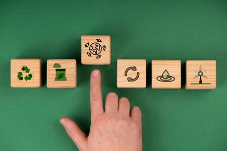

A2Z Recyclers Mission, Vision and Values
Mission statement
At A2Z recyclers we understand the connection between a healthy planet and good recycling habits. We aim to make our earth green and inculcate recycling as a habit, not a practice. Vision
From collecting household recyclables and offering business waste solutions to running awareness campaigns in schools, we work hands-on to make recycling accessible, effective, and impactful.
Why it Matters
Every ton of recycled paper saves 17 trees. Every bottle reused reduces plastic in our oceans. At A2Z Recyclers, we measure success not just in kilos collected, but in the difference it makes to our planet.
Vision
To promote recycling habits in every household and business organisation.

Values
Commitment to make reduce pollution.
Teamwork to work collectively as a society to make the environment cleaner.
Responsibility to make everyone understand how good and bad recycling habits affect the environment. Start Recycling Today!